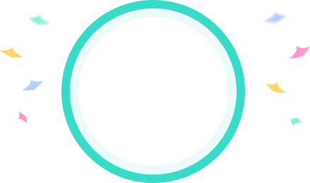
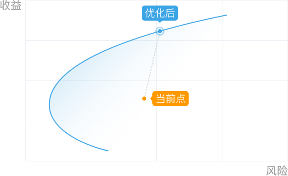

您的诊断结果

3
根据理财易站的基金筛选评测模型，您持有的基金 (组合）风险等级为
级。综合判断您的风险偏好、承受力、投资理财目标，您的风险评测结果为
级。您当前的持仓风险
您的风险评测结果。
优化效果展示

综合考虑预期收益，建议您优化组合。根据诺贝尔奖理论马科维茨均值-方差模型，将现有的基金(组合)优化到有效边界，将使您在同一风险水平下获得最高收益，或者同一收益水平下风险降至最低。
查看优化建议